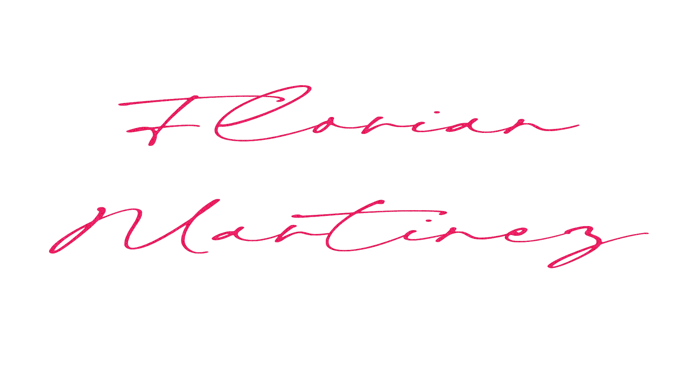
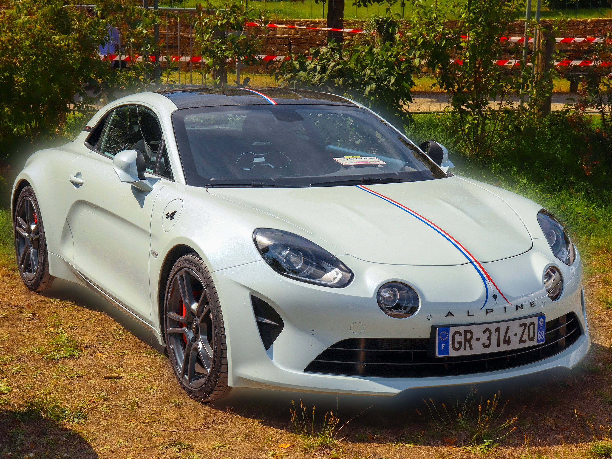
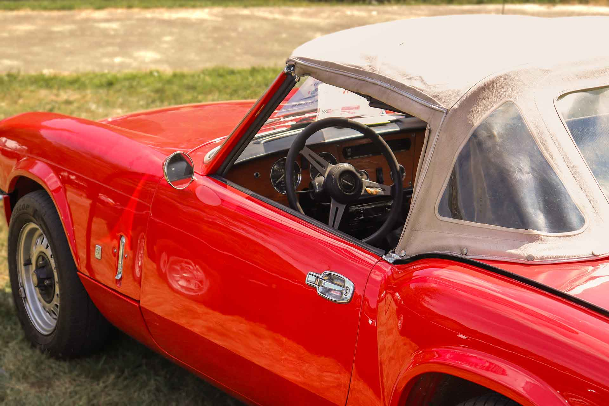
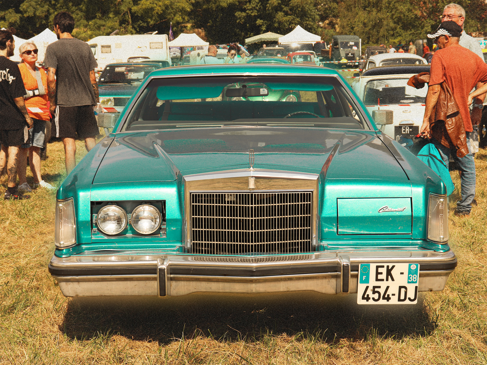
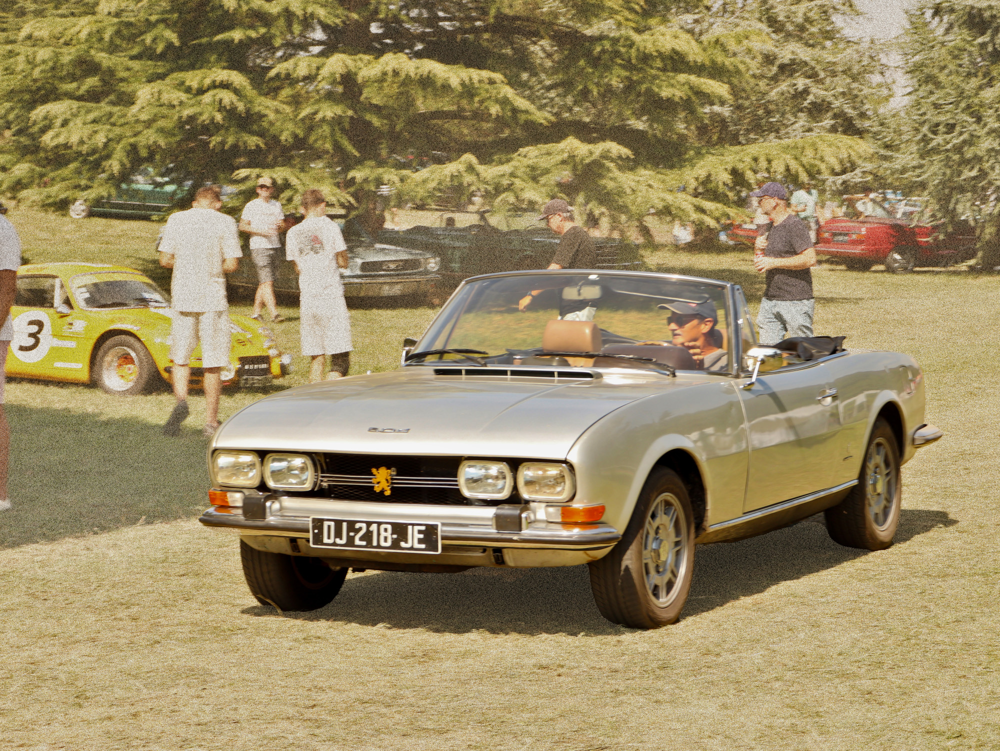

Je m'appelle Florian Martinez, ancien étudiant en BUT informatique, actuellement en BUT
MMI a l'Université Savoie Mont Blanc
Je suis passionné à la fois par le développement et par l'audiovisuel.
Principalement spécialisé dans le cadrage / montage / Motion design. J'ai aussi des connaissance en
modélisation 3d que j'ai pu apprendre dans mon temps libre
Je m'intéresse à plusieurs domaines tels que l'automobile, les jeux vidéo, etc.
BAC STI2D
BUT Informatique
(1 semestre validé)
BUT MMI
Alternant chez Transdev
Studio Vincent.mov
X
Montage d'une interview menée par Savoie News auprès d'Eva Ngalle, fondatrice de l'application TI3RS — un outil de messagerie sécurisée destiné aux victimes de violences conjugales, réalisé dans le cadre de mon stage chez Savoie News.
Rollerman.mp4
X
J'ai réalisé le montage de ce reportage sur Jean-Yves Blondeau,tourné par Florent DURANDO. Sur ce montage j'ai pu experimenté et sortir du format classique pour adopter un style plus dynamique.
Interview_Chessboxing.mp4
X
Lors de la première année du BUT MMI, l'un des premiers gros projets était de réaliser l'interview d'une personne exerçant une activité insolite. Après une période de recherche avec notre équipe, nous avons rencontré Alexis Imbault qui pratique le chessboxing, un mélange entre les échecs et la boxe.
Live_Bavardé.mp4
X
Pour un projet de création de média, nous avons réalisé une interview de fans & professionnels du
monde du jeu de société en live sur Twitch.
Je me suis occupé de l'organisation du live et du cadrage d'une des caméras.
Ligue_Contre_Le_Cancer.mp4
X
Hors du cadre des études j'ai participé a la captation du relais pour la vie, organisé par la Ligue contre le cancer de Savoie
Motion_Design.mp4
X
Dans le cadre d'un projet en MMI, nous devions, par groupe de 2, réaliser un motion design afin
d'expliquer le fonctionnement d'une technologie. Il nous a été attribué le sujet de la VR.
Nous avons décidé d'utiliser un style "peinture" réalisé par Dimitri GAY et un style 3D polygonal réalisé par mes
soins, rappelant celui de la PS1 afin de représenter l'univers virtuel.
Pour l'animation j'ai utilisé After effects et Blender, puis Premier Pro pour le montage.
Mezzalab.mp4
X
Ceci est une petite animation dans le cadre de la création d'une identité visuelle pour une salle de l'IUT. Nous avons créé une direction artistique et, dans ce cadre, j'ai réalisé une animation représentant l'ambiance du lieu.
24hMotion.mp4
X
Ce motion design a été réalisé en 24 heures (environ 9 à 10 heures de travail) dans le cadre de la formation MMI à l’IUT de l’Université Savoie Mont Blanc.L’exercice consistait à concevoir un visuel animé original à partir d’une chanson générée avec Suno AI.
Motion_3D.mp4
X
Ce motion a été réalisé lors d'un cours de motion design 3D, nous devions faire une composition centrée sur un modèle 3D à mettre en valeur. Étant donné que j'aime particulièrement l'esthétique rétro et les voitures anciennes, je suis parti sur un style "low poly" et une ambiance néon avec une palette de couleur principalement violette.
casinono.mp4
X
Animation en boucle simple d'une machine à sous dans un style cartoon que j'ai réalisée pour le projet d'un ami lors de mon BUT informatique.
halloween.mp4
X
Ceci est une petite animation 3D réalisé pour halloween dans mon temps libre.
halloween.mp4
X
Une autre animation plus ancienne pour halloween, j'avais experimenté la simulation de fluide.
rooftop.mp4
X
J'ai voulu créer une ambiance "Post-apo" dans un style low poly

Alpine A110

Triumph GT6 MK3

Cadillac, Lincoln Continental Mark V

Peugeot 504

Alpine A110